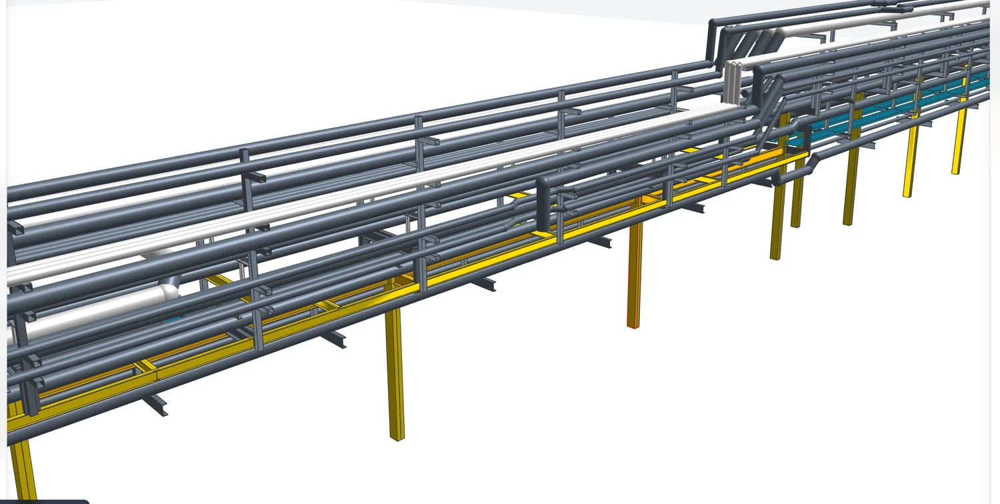

Qué es HEFESTO Pre-BIM Modeler
Una aplicación de escritorio para crear y ordenar la información BIM de un proyecto sin la carga de una plataforma BIM completa. Puedes empezar desde una idea, desde un proyecto tradicional en CAD o PDF, o desde una nube de puntos de un edificio existente, y llegar en todos los casos a la misma base: elementos con tipo, nivel, geometría, medición y datos.
Encaje volumétrico, muros multicapa, huecos, cubiertas y espacios con superficie útil desde el primer boceto.
Mediciones por tipo y nivel, presupuesto enlazado a bases de precios BC3 y documentación para obra.
Estructura metálica con perfiles de catálogo, instalaciones, componentes de equipo y exportación a cálculo.
El proyecto de este curso, en 3D
Todo el curso usa un mismo proyecto de demostración construido en HEFESTO: una vivienda unifamiliar de dos plantas y una nave metálica con instalaciones. Contiene 76 elementos modelados y 17 puertas y ventanas alojadas en sus muros. Gíralo, activa y desactiva disciplinas, baja el plano de corte y haz clic en cualquier elemento para ver sus propiedades.
Cinco conceptos que se usan en todo el curso
- Niveles. Cada elemento nace en un nivel base y se referencia a un nivel superior. En la demo: planta baja (±0,00), planta primera (+3,00) y cubierta (+6,00).
- Tipos. Un tipo define la composición y el nombre del elemento: capas de un muro, sección de un perfil, diámetro de una tubería. Cambiar el tipo actualiza todos los ejemplares.
- Vistas. Las plantas se crean solas con cada nivel. Secciones y alzados se definen por una línea de corte y una profundidad.
- Hojas. El compositor de planos coloca vistas a escala en formatos A4 a A0 y exporta PDF y DXF.
- JSON HEFESTO. El proyecto se guarda en un JSON abierto y legible, pensado para que otras herramientas y los modelos de IA puedan leerlo sin perder la trazabilidad.

Cómo se organiza un proyecto
Define niveles y ejes.
Crea o importa los tipos constructivos.
Modela a mano, desde un plano de referencia o desde una nube de puntos.
Revisa mediciones, genera planos y exporta.
Recorre el modelo
En el visor de arriba, pulsa Vivienda, desactiva la Cubierta y baja el corte horizontal hasta 1,5 m. Estás viendo la planta baja como la vería una sección horizontal. Haz clic en un muro de fachada y localiza su tipo y los huecos que aloja.